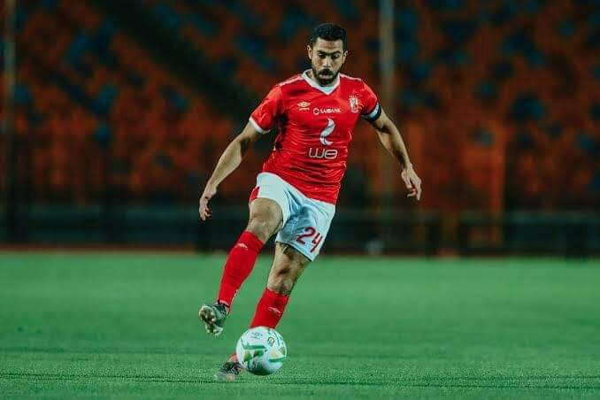

Education is the process of facilitating learning, or the acquisition of knowledge,
ali malol
is a Tunisian professional footballer who plays as a left back for Al Ahly and the Tunisia national team.

ahmed fathy
is an Egyptian professional footballer who plays for Al Ahly.
hamdy fathy
is an Egyptian professional footballer who plays as a midfielder for Egyptian Premier League club Al Ahly and Egyptian national team.
Ahmed Fathi Abdelmonem Ahmed Ibrahim (Arabic: أحمد فتحي; born 10 November 1984) is an Egyptian professional footballer
who plays for Al Ahly.Born in Banha,[3] he has played a variety of roles in the midfield,
including right and defensive midfield and has also occasionally played in the right back role for club and country.
He started his career with Egyptian side Ismaily SC before moving to England to play in the Premier League with Sheffield United in 2007.
Fathy returned to Egypt after only a few months however, signing to Al Ahly where he has remained until April 2020 where
he signed to Pyramids FC, whilst also spending some time on loan at both Kuwait side Kazma and Hull City back in England.
Alongside his club career, Fathy has represented Egypt since 2002, playing over one hundred games and scoring nine goals for his country.